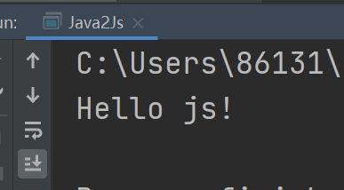
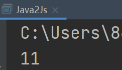
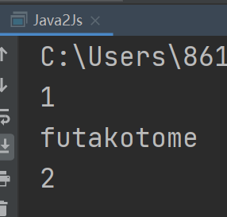
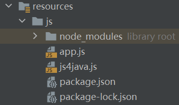
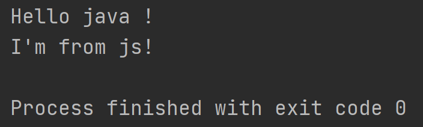

前言
GraalVM号称通用型虚拟机,并能运行多语言,那我们就先来试试这个多语言的特性.
环境
windows:
OS: window10
RAM: 8G
IDE: IntelliJ IDEA 2020.3.2 x64
GraalVM Version: Community Version/21.0.0.2/JDK11linux:
OS: Centos7
RAM: 1G
GraalVM Version: Community Version/21.0.0.2/JDK11
Java调用JS
先来一个简单例子
1 | package io.futakotome; |
运行

可以看到Java顺利的执行了JS中最常见的”调试语句”
进一步的,通过GraalVM的抽象,JS的一些”对象”可以作为Java中的对象进行使用,比如:
JS函数:
1 | package io.futakotome; |
运行结果

JS对象:
1 | package io.futakotome; |
运行结果

在工作目录新建js文件js4java.js

(function helloWorld() {
console.log(“Hello java !”)
return “I’m from js!”;
});
注意:必须要用括号把函数封装成匿名函数
在Java中调用JS函数
2
3
4
5
6
7
8
9
10
11
12
13
14
15
16
17
18
19
import org.graalvm.polyglot.Context;
import org.graalvm.polyglot.Source;
import org.graalvm.polyglot.Value;
import java.io.IOException;
public class Java2Js {
public static void main(String... args) throws IOException {
//读取类路径下的JS文件
Source source = Source.newBuilder("js", Java2Js.class.getClassLoader().getResource("js/js4java.js")).build();
//创建多语言上下文
Context polyglot = Context.create();
//调用js文件里的'helloWorld'函数
Value result = polyglot.eval(source).execute("helloWorld");
System.out.println(result);
}
}运行结果
